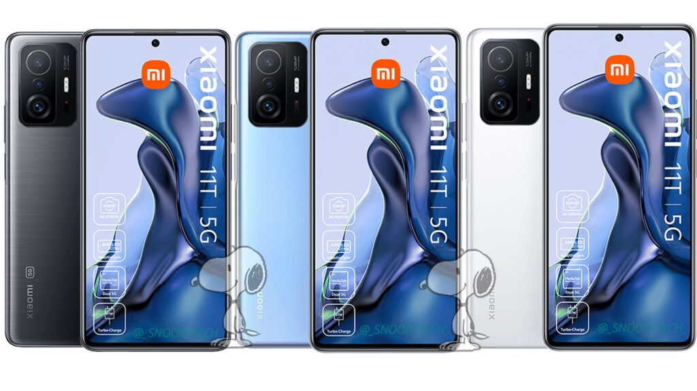
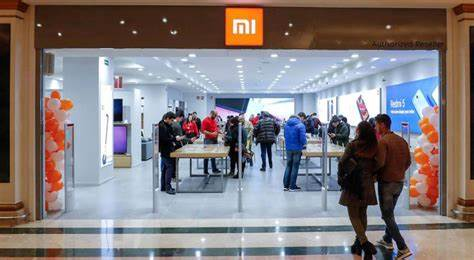

Bienvenido al Blog Xiaomi
En este blog, exploramos las últimas novedades de Xiaomi, uno de los gigantes tecnológicos más innovadores de la era moderna. Desde sus smartphones hasta su ecosistema de gadgets inteligentes, Xiaomi ha revolucionado la forma en que vivimos y trabajamos.
Entre los productos más destacados del momento tenemos los siguientes:
- Xiaomi 13T (smartphone de gama alta)
- Serie Redmi Note 12
- Robots de limpieza: Xiaomi Vacuum E10, S10, S10+
- Wearables: Xiaomi Smart Band 8
- Xiaomi 15 Pro (batería de 5,400 mAh) y mucho más...
Últimas Novedades
Explora lo más reciente en tecnología Xiaomi: smartphones, gadgets y más.
Artículos relacionados
¿Por qué Xiaomi se ha convertido en un líder mundial?
Xiaomi ha logrado alcanzar una audiencia global con sus productos de calidad a precios asequibles. Desde sus smartphones hasta sus televisores inteligentes, Xiaomi se ha asegurado de mantenerse a la vanguardia de la tecnología.
